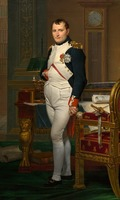
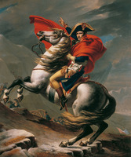

Overview of Life
Napoleon Bonaparte (born Napoleone Bonaparte;[1][b] 15 August 1769 – 5 May 1821), later known by his regnal name Napoleon I, was a French military commander and political leader who rose to prominence during the French Revolution and led successful campaigns during the Revolutionary Wars. He was the leader of the French Republic as First Consul from 1799 to 1804, then of the French Empire as Emperor of the French from 1804 until 1814, and briefly again in 1815. Napoleon's political and cultural legacy endures as a celebrated and controversial leader. He initiated many liberal reforms that have persisted through the years, and is considered one of the greatest military commanders in history. His campaigns are still studied at military academies worldwide. Between three and six million soldiers and civilians died in the Napoleonic Wars.[2][3]
Napoleon was born on the island of Corsica to a native family descending from Italian nobility.[4][5] Napoleon was resentful of the French monarchy, and supported the French Revolution in 1789 while serving in the French army, even going so far as to try and spread its ideals to his native Corsica. He rose rapidly in the ranks after saving the governing French Directory by firing on royalist insurgents. In 1796, he began a military campaign against the Austrians and their Italian allies, scoring decisive victories, and became a national hero. Two years later he led a military expedition to Egypt that served as a springboard to political power. He engineered a coup in November 1799 and became First Consul of the Republic. In 1804, to consolidate and expand his power, he crowned himself Emperor of the French.
Napoleon had an extensive impact on the modern world, bringing liberal reforms to the lands he conquered in Europe, especially the regions of the Low Countries, Switzerland, modern Italy and Germany. He implemented many liberal policies in France and Western Europe.[c] Napoleon also sold the Louisiana Territory to the United States in 1803, instantly doubling the size of the United States.[2][13] His role in the Haitian Revolution and decision to reinstate slavery in France's overseas colonies are controversial and affect his reputation.[14]
Early life
Napoleon's family was of Italian origin. His paternal ancestors, the Buonapartes, descended from a minor Tuscan noble family that emigrated to Corsica in the 16th century and his maternal ancestors, the Ramolinos, descended from a minor Genoese noble family.[15] His parents Carlo Maria Bonaparte and Maria Letizia Ramolino maintained an ancestral home called "Casa Bonaparte", known nowadays as Maison Bonaparte, in Ajaccio. Napoleon was born there on 15 August 1769. He was the family's fourth child and third son.[d] He had an elder brother, Joseph, and younger siblings Lucien, Elisa, Louis, Pauline, Caroline, and Jérôme. Napoleon was baptised as a Catholic, under the name Napoleone.[16] In his youth, his name was also spelled as Nabulione, Nabulio, Napolionne, and Napulione.
Napoleon was born one year after the Republic of Genoa ceded Corsica to France.[18] The state sold sovereign rights a year before his birth and the island was conquered by France during the year of his birth. It was formally incorporated as a province in 1770, after 500 years under Genoese rule and 14 years of independence.[e] Napoleon's parents joined the Corsican resistance and fought against the French to maintain independence, even when Maria was pregnant with him. His father Carlo was an attorney who had supported and actively collaborated with patriot Pasquale Paoli during the Corsican war of independence against France;[5] after the Corsican defeat at Ponte Novu in 1769 and Paoli's exile in Britain, Carlo began working for the new French government and in 1777 was named representative of the island to the court of Louis XVI.[5][22]
The dominant influence of Napoleon's childhood was his mother, whose firm discipline restrained a rambunctious child.[22] Later in life, Napoleon said, "The future destiny of the child is always the work of the mother."[23] His maternal grandmother had married into the Swiss Fesch family in her second marriage, and Napoleon's uncle, the cardinal Joseph Fesch, fulfilled a role as protector of the Bonaparte family for some years. Napoleon's noble, moderately affluent background afforded him greater opportunities to study than were available to a typical Corsican of the time.[24] Statue of Bonaparte as a schoolboy in Brienne, aged 15, by Louis Rochet [fr] (1853) When he turned 9 years old,[25][26] he moved to the French mainland and enrolled at a religious school in Autun in January 1779. In May, he transferred with a scholarship to a military academy at Brienne-le-Château.[27] In his youth he was an outspoken Corsican nationalist and supported the state's independence from France.[25][28] Like many Corsicans, Napoleon spoke and read Corsican (as his mother tongue) and Italian (as the official language of Corsica).[29][30][31][28] He began learning French in school at the age of around 10.[32] Although he became fluent in French, he spoke with a distinctive Corsican accent and never learned to spell in French.[33] Consequently, Napoleon was routinely bullied by his peers for his accent, birthplace, short stature, mannerisms, and inability to speak French quickly.[30] He became reserved and melancholy, applying himself to reading. An examiner observed that Napoleon "has always been distinguished for his application in mathematics. He is fairly well acquainted with history and geography ... This boy would make an excellent sailor".
Personality
Historians emphasize the strength of the ambition that took Napoleon from an obscure village to rule over most of Europe.[278][page needed] In-depth academic studies about his early life conclude that up until age 2, he had a "gentle disposition".[30] His older brother, Joseph, frequently received their mother's attention which made Napoleon more assertive and approval-driven. During his early schooling years, he would be harshly bullied by classmates for his Corsican identity and limited command of the French language. To withstand the stress he became domineering, eventually developing an inferiority complex.
George F. E. Rudé stresses his "rare combination of will, intellect and physical vigour".[279] In one-on-one situations he typically had a hypnotic effect on people, seemingly bending the strongest leaders to his will.[280] He understood military technology, but was not an innovator in that regard.[281] He was an innovator in using the financial, bureaucratic, and diplomatic resources of France. He could rapidly dictate a series of complex commands to his subordinates, keeping in mind where major units were expected to be at each future point, and like a chess master, "seeing" the best plays moves ahead.[282] This intellectual vigour was accompanied by a mixture of "remarkable charisma and willpower" and "a furious temper" exhibited during failure of his plans; which commanded respect as well as dread from his adjutants.
Napoleon maintained strict, efficient work habits, prioritizing what needed to be done. He cheated at cards but repaid the losses; he had to win at everything he attempted.[284] He kept relays of staff and secretaries at work. Unlike many generals, Napoleon did not examine history to ask what Hannibal or Alexander or anyone else did in a similar situation. Critics said he won many battles simply because of luck; Napoleon responded, "Give me lucky generals", as he believed "luck comes to those who recognize opportunity, and seize it".[285] Dwyer states that Napoleon's victories at Austerlitz and Jena in 1805–06 heightened his sense of self-grandiosity, leaving him even more certain of his destiny and invincibility.[286] "I am of the race that founds empires", he once boasted, deeming himself an heir to the Ancient Romans.
In terms of influence on events, it was more than Napoleon's personality that took effect. He reorganized France itself to supply the men and money needed for wars.[288] He inspired his men—the Duke of Wellington said his presence on the battlefield was worth 40,000 soldiers, for he inspired confidence from privates to field marshals.[289] The force of his personality neutralized material difficulties as his soldiers fought with the confidence that with Napoleon in charge they would surely win.
Early Career Acts
The conquests of Napoleon
Some of the wars Napoleon was involved in
- Siege of Toulon
- Battle of Saorgio
- Struggle for Mantua
- Battle of Shubra Khit
- Battle of the Nile
- Attack on Jaffa
- Ottoman amphibious invasion at Abukir
Major wars in Europe
- War of the Third Coalition
- War of the Fourth Coalition and Tilsit
- Peninsular War
- War of the Fifth Coalition and Marie Louise
- Invasion of Russia
- Battle of Borodino
- War of the Sixth Coalition